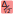
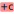
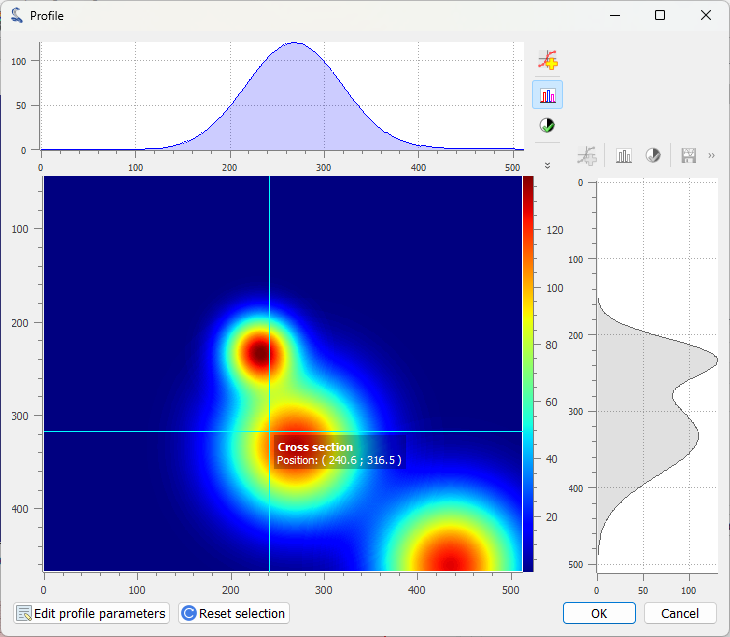
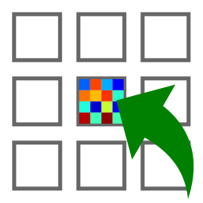

Operations on Images#
This section describes the operations that can be performed on images.
See also
Processing Images for more information on image processing features, or Computing features on Images for information on computing features on images.
Screenshot of the “Operations” menu.#
When the “Image Panel” is selected, the menus and toolbars are updated to provide image-related actions.
The “Operations” menu allows you to perform various operations on the current image or group of images. It also allows you to extract profiles, distribute images on a grid, or resize images.
Basic arithmetic operations#
Operation |
Description |
|---|---|
Sum |
\(z_{M} = \sum_{k=0}^{M-1}{z_{k}}\) |
Average |
\(z_{M} = \dfrac{1}{M}\sum_{k=0}^{M-1}{z_{k}}\) |
Difference |
\(z_{2} = z_{1} - z_{0}\) |
 Quadratic difference |
\(z_{2} = \dfrac{z_{1} - z_{0}}{\sqrt{2}}\) |
Product |
\(z_{M} = \prod_{k=0}^{M-1}{z_{k}}\) |
Division |
\(z_{2} = \dfrac{z_{1}}{z_{0}}\) |
Operations with a constant#
Create a new image which is the result of a constant operation on each selected image:
Operation |
Equation |
|---|---|
 Addition |
\(z_{k} = z_{k-1} + conv(c)\) |
|
\(z_{k} = z_{k-1} - conv(c)\) |
|
\(z_{k} = conv(z_{k-1} \times c)\) |
|
\(z_{k} = conv(\dfrac{z_{k-1}}{c})\) |
 Subtraction
Subtraction Multiplication
Multiplication Division
Divisionwhere \(c\) is the constant value and \(conv\) is the conversion function which handles data type conversion (keeping the same data type as the input image).
Real and imaginary parts#
Operation |
Description |
|---|---|
|
\(z_{k} = |z_{k-1}|\) |
|
\(z_{k} = \Re(z_{k-1})\) |
Imaginary part |
\(z_{k} = \Im(z_{k-1})\) |
 Absolute value
Absolute value Real part
Real partData type conversion#
The “Convert data type” action allows you to convert the data type of the selected images.
Note
Data type conversion relies on numpy.ndarray.astype() function with
the default parameters (casting=’unsafe’).
Basic mathematical functions#
Function |
Description |
|---|---|
Exponential |
\(z_{k} = \exp(z_{k-1})\) |
Logarithm (base 10) |
\(z_{k} = \log_{10}(z_{k-1})\) |
Log10(z+n) |
\(z_{k} = \log_{10}(z_{k-1}+n)\) (avoid Log10(0) on image background) |
Other operations#
Flat-field correction#
Create a new image which is flat-field correction of the two selected images:
where \(z_{0}\) is the raw image, \(z_{f}\) is the flat field image, \(z_{threshold}\) is an adjustable threshold and \(\overline{z_{f}}\) is the flat field image average value:
Note
Raw image and flat field image are supposedly already corrected by performing a dark frame subtraction.
Rotation#
Create a new image which is the result of rotating (90°, 270° or arbitrary angle) or flipping (horizontally or vertically) data.
Intensity profiles#
- Line profile
Extract an horizontal or vertical profile from each selected image, and create new signals from these profiles.
 Line profile dialog. Parameters may also be set manually (“Edit profile parameters” button).#
- Segment profile
Extract a segment profile from each selected image, and create new signals from these profiles.
- Average profile
Extract an horizontal or vertical profile averaged over a rectangular area, from each selected image, and create new signals from these profiles.

Average profile dialog: the area is defined by a rectangle shape. Parameters may also be set manually (“Edit profile parameters” button).#
- Radial profile extraction
Extract a radial profile from each selected image, and create new signals from these profiles.
The following parameters are available:
Parameter
Description
Center
Center around which the radial profile is computed: centroid, image center, or user-defined
X
X coordinate of the center (if user-defined), in pixels
Y
Y coordinate of the center (if user-defined), in pixels
Distribute images along a grid#
Feature |
Description |
|---|---|
|
Distribute selected images on a regular grid |
 Reset image positions |
Reset the positions of the selected images to first image (x0, y0) coordinates |
 Distribute on a grid
Distribute on a grid